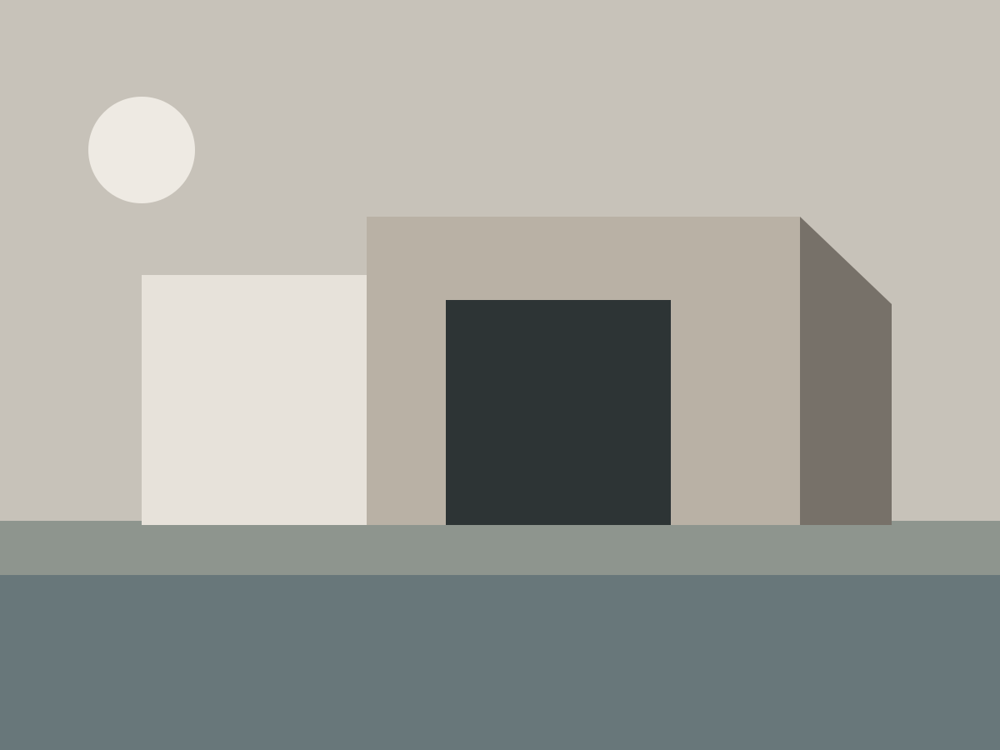
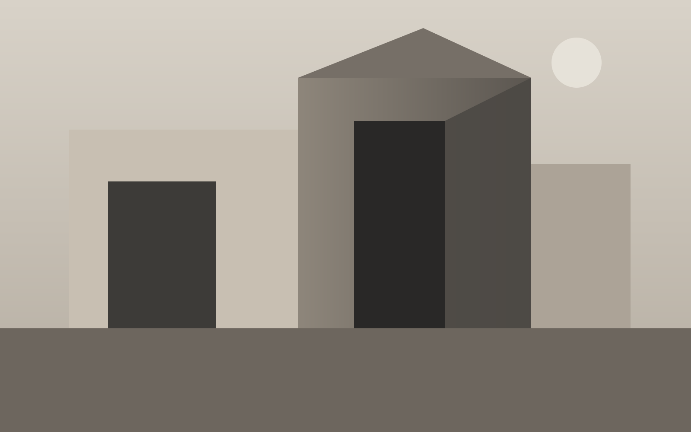

01

Independent Architecture Studio — Paris / Copenhagen

Selected work — 01 / 05Our approach
We design spaces where restraint creates intensity.
Atelier Noir explores the dialogue between permanence and atmosphere. Each project is shaped through proportion, tactile materiality, natural light and the rituals of daily life.
Capabilities
For residential, cultural and spatial commissions.
Start a conversation ↗